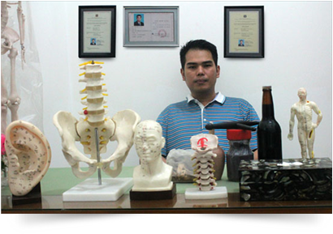

Sinshe hartono Yusuf & Sinshe Nico
Sinshe Ahli Totok


Sinshe Hartono Yusuf yang sudah sejak kecil ikut membantu ayahnya
yang juga berprofesi sama sebagai Sinshe, dalam kesehariannya mampu
menangani pasiennya sampai dengan 20 orang dan telah berpraktek
sejak tahun 1980an.
Bakat yang dimilikinya selain merupakan keturunan dari ayahnya, sinshe
Kie Kok Ting, dan karunia dari Tuhan, untuk itu ia selalu bersikap jujur
dalam menangani penyakit pasiennya.
Pengobatan tehnik totok tubuh ini juga berasal dari ilmu beladiri Kungfu.
yang juga berprofesi sama sebagai Sinshe, dalam kesehariannya mampu
menangani pasiennya sampai dengan 20 orang dan telah berpraktek
sejak tahun 1980an.
Bakat yang dimilikinya selain merupakan keturunan dari ayahnya, sinshe
Kie Kok Ting, dan karunia dari Tuhan, untuk itu ia selalu bersikap jujur
dalam menangani penyakit pasiennya.
Pengobatan tehnik totok tubuh ini juga berasal dari ilmu beladiri Kungfu.
Dalam menangani para pasien Sinshe Hartono
Yusuf juga dibantu oleh asisten pribadinya yang tak lain
adalah anak kandungnya sendiri, Nico yang juga memiliki
Keahlian ilmu totok tubuh dan akupuntur dari keturunan
orang tuanya dan juga mendalami ilmunya lagi ke negeri
China (Shanghai) di Sanghai University of T.C.M College of
Accupunture and Tuina
Yusuf juga dibantu oleh asisten pribadinya yang tak lain
adalah anak kandungnya sendiri, Nico yang juga memiliki
Keahlian ilmu totok tubuh dan akupuntur dari keturunan
orang tuanya dan juga mendalami ilmunya lagi ke negeri
China (Shanghai) di Sanghai University of T.C.M College of
Accupunture and Tuina